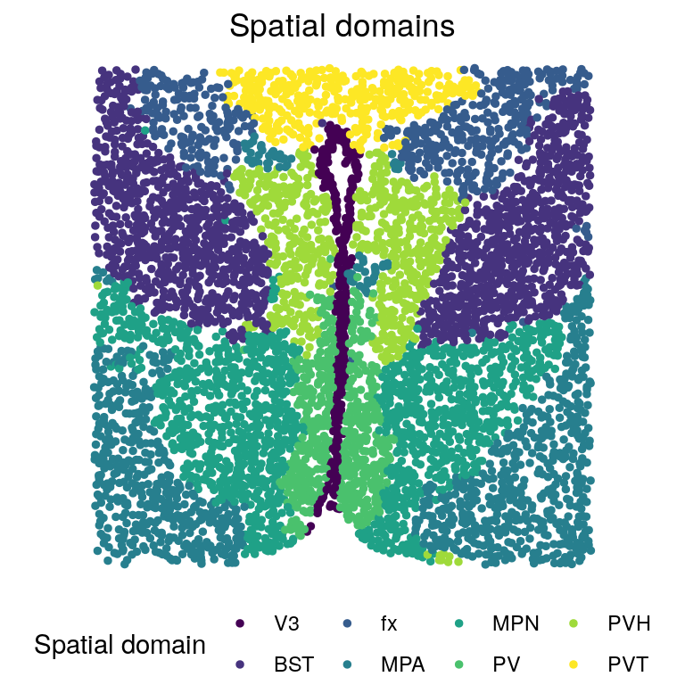
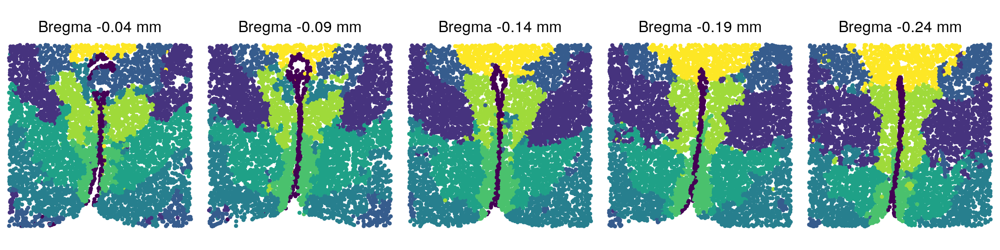
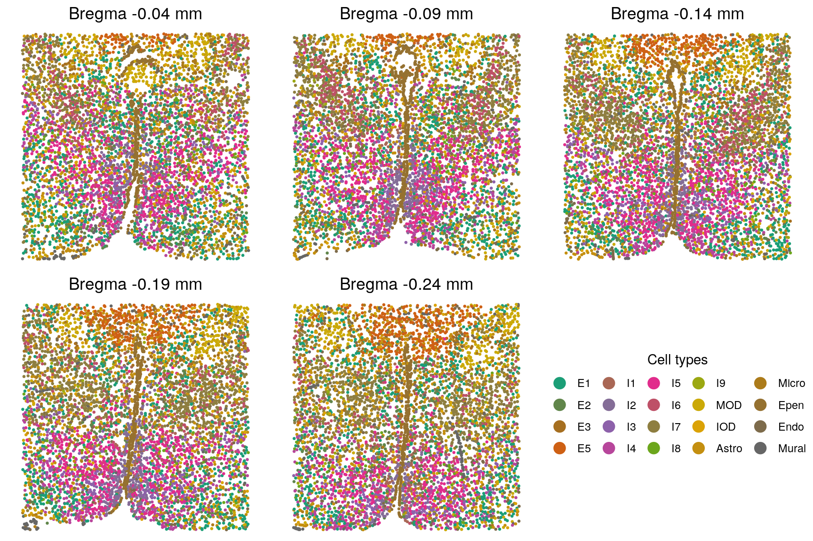
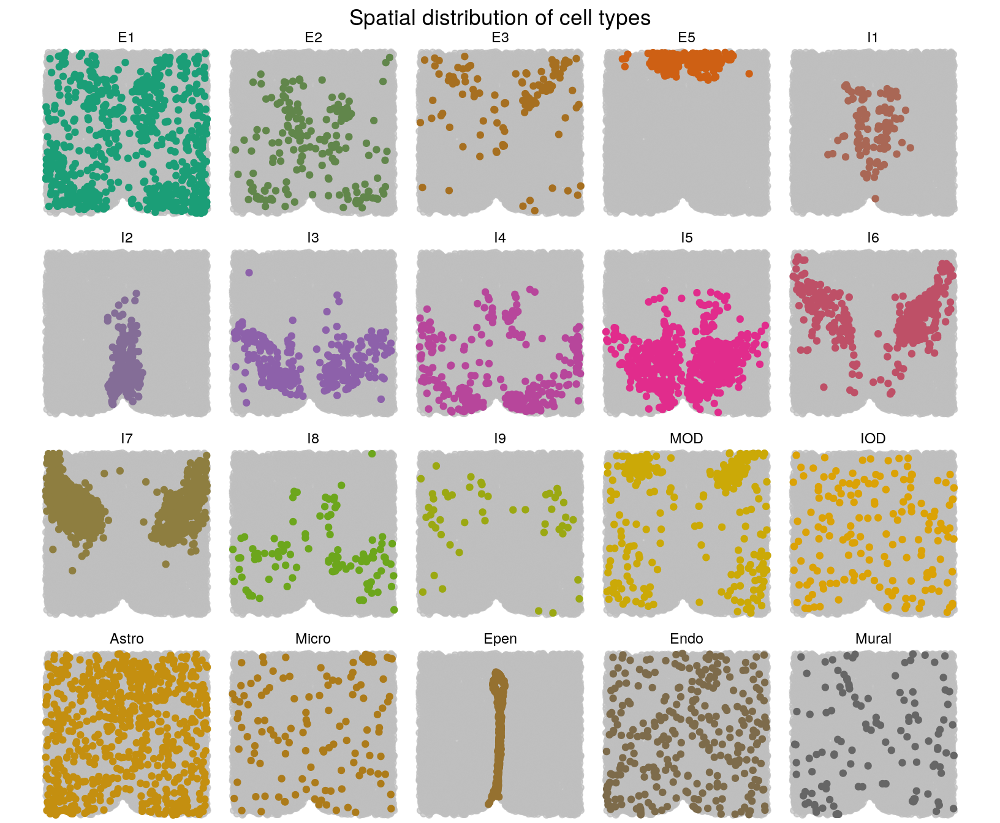
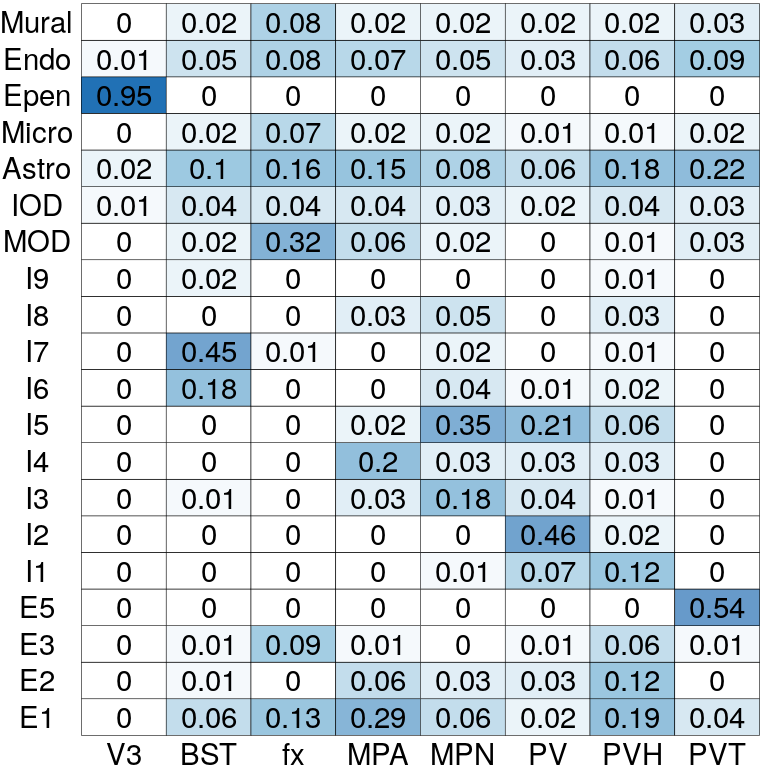

MERFISH (Moffitt et al., 2018)
Zheng Li
2022-02-24
Last updated: 2022-03-05
Checks: 7 0
Knit directory: BASS-analysis/
This reproducible R Markdown analysis was created with workflowr (version 1.7.0). The Checks tab describes the reproducibility checks that were applied when the results were created. The Past versions tab lists the development history.
Great! Since the R Markdown file has been committed to the Git repository, you know the exact version of the code that produced these results.
Great job! The global environment was empty. Objects defined in the global environment can affect the analysis in your R Markdown file in unknown ways. For reproduciblity it’s best to always run the code in an empty environment.
The command set.seed(0) was run prior to running the code in the R Markdown file. Setting a seed ensures that any results that rely on randomness, e.g. subsampling or permutations, are reproducible.
Great job! Recording the operating system, R version, and package versions is critical for reproducibility.
Nice! There were no cached chunks for this analysis, so you can be confident that you successfully produced the results during this run.
Great job! Using relative paths to the files within your workflowr project makes it easier to run your code on other machines.
Great! You are using Git for version control. Tracking code development and connecting the code version to the results is critical for reproducibility.
The results in this page were generated with repository version c049bd2. See the Past versions tab to see a history of the changes made to the R Markdown and HTML files.
Note that you need to be careful to ensure that all relevant files for the analysis have been committed to Git prior to generating the results (you can use wflow_publish or wflow_git_commit). workflowr only checks the R Markdown file, but you know if there are other scripts or data files that it depends on. Below is the status of the Git repository when the results were generated:
Untracked files:
Untracked: analysis/DLPFC.Rmd
Note that any generated files, e.g. HTML, png, CSS, etc., are not included in this status report because it is ok for generated content to have uncommitted changes.
These are the previous versions of the repository in which changes were made to the R Markdown (analysis/MERFISH.Rmd) and HTML (docs/MERFISH.html) files. If you’ve configured a remote Git repository (see ?wflow_git_remote), click on the hyperlinks in the table below to view the files as they were in that past version.
| File | Version | Author | Date | Message |
|---|---|---|---|---|
| Rmd | c049bd2 | zhengli09 | 2022-03-05 | Add MERFISH analysis |
Introduction
Here, we apply BASS to analyze the MERFISH dataset that measured the spatial transcriptomics on the mouse preoptic region of the hypothalamus from Moffitt et al., 2018. For single-sample analysis, we focus on the tissue section Bregma -0.14 mm from animal 1. For multi-sample analysis, we obtained four additional tissue sections adjacent to Bregma -0.14 mm from the same animal, including tissue sections at Bregma -0.04, -0.09, -0.19 and -0.24 mm. The original data can be downloaded from here. We excluded five blank control genes and excluded cells that are annotated to be the “Ambiguous” class as they were identified as putative doublets. Finally, we retained the same set of 155 genes measured on 5,488 (Bregma -0.04 mm), 5,557 (Bregma -0.09 mm), 5,926 (Bregma -0.14 mm), 5,803 (Bregma -0.19 mm), and 5,543 (Bregma -0.24 mm) cells along with their centroid coordiates for the following analysis. The processed data can be download from the data directory. For detailed usage of all the functions, please refer to the software tutorial section.
library(BASS)
load("data/MERFISH_Animal1.RData") # cnts_mult info_multSingle-sample analysis
Load data and set hyper-parameters
# We focus on the tissue section Bregma -0.14 mm
# in the single-sample analysis
smp <- "-0.14"
cnts <- cnts_mult[smp] # 155x5926 count data
info <- info_mult[smp]
xy <- lapply(info, function(info.i){
as.matrix(info.i[, c("x", "y")]) # 5926x2 spatial coordinates
})
cnts[[1]][1:5,1:5] -2914x-601 -2908x-509 -2904x-495 -2902x-540 -2893x-483
Ace2 0.000000 0.00000 0 0.000000 0
Adora2a 0.000000 0.00000 0 1.478278 0
Aldh1l1 7.279422 12.79431 0 10.347495 0
Amigo2 1.819876 0.00000 0 2.956489 0
Ano3 0.000000 0.00000 0 0.000000 0head(xy[[1]]) x y
-2914x-601 -2914.394 -601.3706
-2908x-509 -2908.222 -509.3757
-2904x-495 -2904.319 -494.8068
-2902x-540 -2902.349 -540.4619
-2893x-483 -2893.200 -482.8964
-2892x-574 -2891.748 -573.9691# hyper-parameters
C <- 20 # number of cell types
R <- 8 # number of spatial domainsRun BASS
set.seed(0)
# Set up BASS object
BASS <- createBASSObject(cnts, xy, C = C, R = R,
beta_est_approach = "ACCUR_EST", init_method = "mclust",
burn_in = 10000, samples = 10000)***************************************
Bayesian Analytics for Spatial Segmentation (BASS)
Authors: Zheng Li, Xiang Zhou
Affiliate: Department of Biostatistics, University of Michigan
INPUT INFO:
- Number of samples: 1
- Number of spots/cells: 5926
- Number of genes: 155
- Potts interaction parameter estimation approach: ACCUR_EST
- Variance-covariance structure of gene expression features: EEE
To list all hyper-parameters, Type listAllHyper(BASS_object)
***************************************# Data pre-processing:
# 1.Library size normalization followed with a log2 transformation
# 2.Dimension reduction with PCA after standardizing all the genes
BASS <- BASS.preprocess(BASS, doLogNormalize = TRUE,
doPCA = TRUE, scaleFeature = TRUE, nPC = 20)***** Log-normalize gene expression data *****
***** Exclude genes with 0 expression *****
***** Reduce data dimension with PCA *****# Run BASS algorithm
BASS <- BASS.run(BASS)# post-process posterior samples:
# 1.Adjust for label switching with the ECR-1 algorithm
# 2.Summarize the posterior samples to obtain the cell type labels, spatial
# domain labels, and cell type proportion matrix estimate
BASS <- BASS.postprocess(BASS)
......................................................................................
. Method Time (sec) Status .
......................................................................................
. ECR-ITERATIVE-1 236.561 Converged (3 iterations) .
......................................................................................
Relabelling all methods according to method ECR-ITERATIVE-1 ... done!
Retrieve the 1 permutation arrays by typing:
[...]$permutations$"ECR-ITERATIVE-1"
Retrieve the 1 best clusterings: [...]$clusters
Retrieve the 1 CPU times: [...]$timings
Retrieve the 1 X 1 similarity matrix: [...]$similarity
Label switching finished. Total time: 249.8 seconds.
......................................................................................
. Method Time (sec) Status .
......................................................................................
. ECR-ITERATIVE-1 103.87 Converged (2 iterations) .
......................................................................................
Relabelling all methods according to method ECR-ITERATIVE-1 ... done!
Retrieve the 1 permutation arrays by typing:
[...]$permutations$"ECR-ITERATIVE-1"
Retrieve the 1 best clusterings: [...]$clusters
Retrieve the 1 CPU times: [...]$timings
Retrieve the 1 X 1 similarity matrix: [...]$similarity
Label switching finished. Total time: 115.9 seconds. clabels <- BASS@res_postprocess$c_ls # cell type clusters
zlabels <- BASS@res_postprocess$z_ls # spatial domain labels
pi_est <- BASS@res_postprocess$pi_ls # cell type composition matrixAnnotate cell types
library(Seurat)
library(dplyr)l <- 1 # Bregma -0.14 mm
# Perform DE analysis with Seurat
seu_obj <- CreateSeuratObject(counts = cnts[[l]], min.cells = 1)
seu_obj <- NormalizeData(seu_obj)
seu_obj <- ScaleData(seu_obj, features = rownames(seu_obj))Centering and scaling data matrixseu_obj <- RunPCA(seu_obj, features = rownames(seu_obj), verbose = F)
Idents(seu_obj) <- factor(clabels[[l]])
markers <- FindAllMarkers(seu_obj, only.pos = T,
min.pct = 0, logfc.threshold = 0, verbose = F)
top5 <- markers %>%
group_by(cluster) %>%
top_n(n = 5, wt = avg_logFC)
# By checking the top DE genes of each cell type cluster,
# we annotate specific cell types for each cluster
cTypes <- c("I7", "I2", "I5", "I6", "E3",
"I3", "Epen", "E1", "Endo", "I8",
"Astro", "I4", "E2", "E4", "Micro",
"MOD", "E5", "I1", "Mural", "IOD")
clabels_l <- factor(clabels[[l]])
levels(clabels_l) <- cTypesTop DE genes for each cell type cluster
data.frame(top5) p_val avg_logFC pct.1 pct.2 p_val_adj cluster gene
1 3.704750e-197 1.1164986 0.975 0.622 5.742363e-195 1 Gda
2 8.717758e-162 1.5502628 0.606 0.181 1.351253e-159 1 Sp9
3 4.398632e-90 1.1270482 0.823 0.538 6.817880e-88 1 Col25a1
4 4.050497e-75 1.0976282 0.496 0.200 6.278271e-73 1 Scgn
5 3.030774e-47 1.1366526 0.441 0.214 4.697699e-45 1 Cyp19a1
6 1.921558e-203 2.8233819 0.966 0.253 2.978415e-201 2 Slc18a2
7 2.724698e-161 1.8994166 0.992 0.357 4.223282e-159 2 Scg2
8 2.315699e-124 1.5807579 1.000 0.503 3.589333e-122 2 Esr1
9 3.462484e-50 1.6840788 0.542 0.187 5.366850e-48 2 Egr2
10 5.286719e-46 1.7773226 0.391 0.104 8.194414e-44 2 Slc17a8
11 6.981507e-220 2.3445866 0.729 0.247 1.082134e-217 3 Calcr
12 4.705025e-114 0.8489903 0.910 0.559 7.292789e-112 3 Prlr
13 2.795543e-83 1.3938209 0.532 0.227 4.333091e-81 3 Brs3
14 1.017792e-58 0.9538676 0.574 0.295 1.577577e-56 3 Tacr1
15 1.210245e-44 1.0234225 0.551 0.318 1.875880e-42 3 Mc4r
16 1.444204e-131 1.8617683 0.667 0.196 2.238516e-129 4 Greb1
17 2.229159e-111 1.8244773 0.524 0.133 3.455196e-109 4 Crhbp
18 3.323187e-96 1.6376333 0.612 0.206 5.150940e-94 4 Scgn
19 6.265752e-81 1.5524800 0.584 0.215 9.711915e-79 4 Cyp19a1
20 2.189544e-19 1.6524520 0.359 0.192 3.393793e-17 4 Npas1
21 1.442107e-92 3.1035485 0.912 0.165 2.235266e-90 5 Fezf1
22 1.950547e-47 2.2104126 0.950 0.373 3.023348e-45 5 Cbln1
23 2.150558e-47 2.3190400 0.988 0.588 3.333365e-45 5 Nos1
24 9.261089e-30 1.6128339 0.825 0.438 1.435469e-27 5 Tac1
25 8.852923e-21 1.5670123 0.650 0.293 1.372203e-18 5 Trh
26 5.939450e-196 2.0180216 0.921 0.305 9.206147e-194 6 Nts
27 5.903943e-134 1.9494747 0.901 0.381 9.151111e-132 6 Coch
28 1.824289e-114 1.3032160 0.970 0.499 2.827648e-112 6 Esr1
29 2.202290e-80 1.0125397 0.938 0.579 3.413550e-78 6 Pgr
30 8.221985e-61 0.9992468 0.944 0.706 1.274408e-58 6 Arhgap36
31 3.350725e-172 2.6870152 0.993 0.623 5.193623e-170 7 Cd24a
32 1.179488e-167 2.4052122 0.949 0.419 1.828206e-165 7 Nnat
33 2.322802e-153 2.3078060 0.844 0.262 3.600343e-151 7 Cyr61
34 1.745598e-151 1.9005931 0.996 0.824 2.705677e-149 7 Mlc1
35 4.115001e-147 2.2442809 0.913 0.401 6.378252e-145 7 Cckbr
36 4.576178e-159 1.1401845 0.946 0.653 7.093076e-157 8 Slc17a6
37 1.237343e-62 0.9128816 0.827 0.565 1.917881e-60 8 Nos1
38 9.618602e-54 1.0192801 0.612 0.353 1.490883e-51 8 Cbln1
39 2.897498e-51 0.8716199 0.789 0.546 4.491122e-49 8 Col25a1
40 4.965540e-19 0.9294465 0.292 0.161 7.696586e-17 8 Fezf1
41 0.000000e+00 3.8445653 0.997 0.198 0.000000e+00 9 Fn1
42 6.952497e-217 4.0190747 1.000 0.423 1.077637e-214 9 Slco1a4
43 1.585710e-207 3.1835705 0.840 0.197 2.457851e-205 9 Klf4
44 9.321717e-163 2.1582489 0.867 0.288 1.444866e-160 9 Rgs5
45 1.945504e-155 2.4396450 0.857 0.295 3.015532e-153 9 Sema3c
46 2.701198e-52 2.3199262 0.750 0.342 4.186856e-50 10 Penk
47 1.426729e-32 1.4163490 0.854 0.644 2.211431e-30 10 Tac2
48 2.760438e-30 2.6340561 0.543 0.227 4.278679e-28 10 Syt2
49 2.040429e-14 1.8893488 0.402 0.191 3.162665e-12 10 Serpinb1b
50 1.480781e-10 1.3405740 0.384 0.199 2.295210e-08 10 Npas1
51 0.000000e+00 2.7920653 0.967 0.558 0.000000e+00 11 Aldh1l1
52 0.000000e+00 2.4168059 0.946 0.519 0.000000e+00 11 Aqp4
53 0.000000e+00 2.1780199 0.955 0.608 0.000000e+00 11 Cxcl14
54 0.000000e+00 1.8057392 0.995 0.811 0.000000e+00 11 Mlc1
55 5.563834e-184 1.8282272 0.772 0.377 8.623942e-182 11 Pou3f2
56 7.441125e-115 1.7975820 0.851 0.236 1.153374e-112 12 Isl1
57 1.535131e-63 1.5002566 0.957 0.737 2.379453e-61 12 Amigo2
58 9.132392e-52 1.2550583 0.692 0.278 1.415521e-49 12 Gal
59 9.779546e-33 1.8393815 0.418 0.143 1.515830e-30 12 Rxfp1
60 3.608151e-30 1.0964208 0.490 0.187 5.592635e-28 12 Serpinb1b
61 5.634314e-112 2.7844100 0.946 0.364 8.733187e-110 13 Cbln1
62 3.908800e-82 3.1223903 0.790 0.283 6.058640e-80 13 Trh
63 4.475930e-73 1.8208559 0.874 0.357 6.937692e-71 13 Bdnf
64 2.403194e-50 1.7345802 0.826 0.437 3.724950e-48 13 Onecut2
65 6.857593e-28 1.6415223 0.563 0.264 1.062927e-25 13 Crhr2
66 2.644930e-35 5.6665169 1.000 0.298 4.099641e-33 14 Oxt
67 2.119736e-21 1.8609237 0.971 0.390 3.285591e-19 14 Oprk1
68 2.196736e-20 1.8054922 0.941 0.418 3.404940e-18 14 Pou3f2
69 1.446012e-19 1.8972255 0.971 0.591 2.241318e-17 14 Nos1
70 5.688427e-15 1.7868836 0.912 0.564 8.817061e-13 14 Cckar
71 1.534597e-81 4.8048571 0.875 0.327 2.378625e-79 15 Selplg
72 1.307508e-40 3.4437510 0.430 0.098 2.026638e-38 15 Ebf3
73 4.021939e-27 1.6131292 0.695 0.393 6.234006e-25 15 Man1a
74 1.320243e-24 1.5444837 0.758 0.553 2.046377e-22 15 Rgs2
75 4.601490e-03 1.0863923 0.414 0.402 7.132310e-01 15 Slc15a3
76 0.000000e+00 3.3954922 1.000 0.139 0.000000e+00 16 Mbp
77 8.787074e-293 4.0530064 0.979 0.217 1.361996e-290 16 Ermn
78 4.028457e-252 3.3908275 0.831 0.148 6.244108e-250 16 Opalin
79 1.086675e-190 2.7733277 0.979 0.439 1.684346e-188 16 Gjc3
80 1.992330e-190 3.6660960 1.000 0.573 3.088112e-188 16 Sgk1
81 4.357876e-141 2.5434281 0.995 0.499 6.754708e-139 17 Necab1
82 1.980634e-136 2.1655189 0.925 0.321 3.069982e-134 17 Ntng1
83 7.724714e-126 1.9812096 1.000 0.672 1.197331e-123 17 Slc17a6
84 8.782593e-92 2.2659573 0.784 0.270 1.361302e-89 17 Ramp3
85 1.864509e-88 1.4426479 0.775 0.211 2.889989e-86 17 Sp9
86 2.858282e-81 2.8443071 0.933 0.281 4.430338e-79 18 Gal
87 1.964595e-51 2.3365909 0.952 0.647 3.045122e-49 18 Th
88 5.334214e-50 1.9918156 0.817 0.272 8.268031e-48 18 Slc18a2
89 9.863336e-37 1.9978636 0.827 0.412 1.528817e-34 18 Oprd1
90 6.369118e-22 1.6862684 0.394 0.110 9.872132e-20 18 Slc17a8
91 6.941379e-111 3.1631211 0.841 0.168 1.075914e-108 19 Adora2a
92 7.763657e-105 3.7698149 0.960 0.303 1.203367e-102 19 Rgs5
93 8.974681e-78 4.4759925 0.706 0.169 1.391076e-75 19 Myh11
94 7.207209e-72 3.4116143 0.643 0.141 1.117117e-69 19 Ace2
95 2.230313e-38 2.8474387 0.540 0.171 3.456985e-36 19 Lmod1
96 2.642775e-176 4.3286309 0.994 0.250 4.096301e-174 20 Pdgfra
97 3.980682e-106 2.4144903 0.953 0.469 6.170057e-104 20 Traf4
98 9.675749e-105 2.3277630 0.971 0.450 1.499741e-102 20 Gjc3
99 1.076146e-87 1.8357509 0.983 0.557 1.668026e-85 20 Sox8
100 1.698883e-82 1.6480515 0.930 0.404 2.633268e-80 20 Sox6Visualization
You can refer to visualization for some useful plotting functions or you can write your own code for plotting.
library(ggplot2)
source("code/viz.R")
# Spatial domains
zTypes <- c("PV", "MPN", "MPA", "fx", "PVH", "BST", "V3", "PVT")
zlabels_l <- factor(zlabels[[l]])
levels(zlabels_l) <- zTypes
zlabels_l <- factor(zlabels_l, c(
"V3", "BST", "fx", "MPA", "MPN",
"PV", "PVH", "PVT"))
plotClusters(xy[[l]], labels = zlabels_l, title = "Spatial domains") +
theme(legend.position = "bottom") +
scale_color_viridis_d("Spatial domain")
# Cell types
library(gghighlight)
library(RColorBrewer)
getPalette <- colorRampPalette(brewer.pal(8, "Dark2"))
clabels_l <- factor(clabels_l, levels = c(
"E1", "E2", "E3", "E4", "E5",
"I1", "I2", "I3", "I4", "I5", "I6", "I7", "I8",
"MOD", "IOD", "Astro", "Micro", "Epen",
"Endo", "Mural"))
plotCellTypes(xy, clabels_l, ncol = 5) +
ggtitle("Spatial distribution of cell types") +
theme(plot.title = element_text(hjust = 0.5)) +
scale_colour_manual(values = getPalette(20))
# Cell type compositions in each spatial domain
pi_est <- BASS@res_postprocess$pi_ls
pi_est <- pi_est[match(levels(clabels_l), cTypes),
match(levels(zlabels_l), zTypes)]
rownames(pi_est) <- levels(clabels_l)
colnames(pi_est) <- levels(zlabels_l)
plotCellTypeComp(pi_est)
Multi-sample analysis
Load data and set hyper-parameters
# We use all the five tissue sections: Bregma -0.04, -0.09, -0.14,
# -0.19, and -0.24 mm in the multi-sample analysis
smps <- c("-0.04", "-0.09", "-0.14", "-0.19", "-0.24")
xy <- lapply(info_mult[smps], function(info.i){
as.matrix(info.i[, c("x", "y")]) # spatial coordinates
})
cnts <- cnts_mult[smps] # count matrices for three tissue sections
# hyper-parameters
C <- 20 # number of cell types
R <- 8 # number of spatial domainsRun BASS
set.seed(0)
# Set up BASS object
BASS <- createBASSObject(cnts, xy, C = C, R = R,
beta_est_approach = "ACCUR_EST", init_method = "mclust",
burn_in = 10000, samples = 10000)***************************************
Bayesian Analytics for Spatial Segmentation (BASS)
Authors: Zheng Li, Xiang Zhou
Affiliate: Department of Biostatistics, University of Michigan
INPUT INFO:
- Number of samples: 5
- Number of spots/cells: 5488 5557 5926 5803 5543
- Number of genes: 155
- Potts interaction parameter estimation approach: ACCUR_EST
- Variance-covariance structure of gene expression features: EEE
To list all hyper-parameters, Type listAllHyper(BASS_object)
***************************************# Data pre-processing:
# In addition to the log-normalization and dimension reduction with
# PCA, we also conduct a batch effect adjustment using the Harmony
# package.
BASS <- BASS.preprocess(BASS, doLogNormalize = TRUE,
doPCA = TRUE, scaleFeature = TRUE, nPC = 20)***** Log-normalize gene expression data *****
***** Exclude genes with 0 expression *****
***** Reduce data dimension with PCA *****
***** Correct batch effect with Harmony *****# Run BASS algorithm
BASS <- BASS.run(BASS)# post-process posterior samples:
BASS <- BASS.postprocess(BASS)
......................................................................................
. Method Time (sec) Status .
......................................................................................
. ECR-ITERATIVE-1 889.738 Converged (3 iterations) .
......................................................................................
Relabelling all methods according to method ECR-ITERATIVE-1 ... done!
Retrieve the 1 permutation arrays by typing:
[...]$permutations$"ECR-ITERATIVE-1"
Retrieve the 1 best clusterings: [...]$clusters
Retrieve the 1 CPU times: [...]$timings
Retrieve the 1 X 1 similarity matrix: [...]$similarity
Label switching finished. Total time: 950.5 seconds.
......................................................................................
. Method Time (sec) Status .
......................................................................................
. ECR-ITERATIVE-1 484.335 Converged (2 iterations) .
......................................................................................
Relabelling all methods according to method ECR-ITERATIVE-1 ... done!
Retrieve the 1 permutation arrays by typing:
[...]$permutations$"ECR-ITERATIVE-1"
Retrieve the 1 best clusterings: [...]$clusters
Retrieve the 1 CPU times: [...]$timings
Retrieve the 1 X 1 similarity matrix: [...]$similarity
Label switching finished. Total time: 550 seconds. clabels <- BASS@res_postprocess$c_ls # cell type clusters
zlabels <- BASS@res_postprocess$z_ls # spatial domain labels
pi_est <- BASS@res_postprocess$pi_ls # cell type composition matrixAnnotate cell types
# Perform DE analysis with Seurat
cnts_all <- do.call(cbind, cnts)
seu_obj <- CreateSeuratObject(counts = cnts_all, min.cells = 1)
seu_obj <- NormalizeData(seu_obj)
seu_obj <- ScaleData(seu_obj, features = rownames(seu_obj))Centering and scaling data matrixseu_obj <- RunPCA(seu_obj, features = rownames(seu_obj), verbose = F)
Idents(seu_obj) <- factor(unlist(clabels))
markers <- FindAllMarkers(seu_obj, only.pos = T,
min.pct = 0, logfc.threshold = 0, verbose = F)
top5 <- markers %>%
group_by(cluster) %>%
top_n(n = 5, wt = avg_logFC)
# By checking the top DE genes of each cell type cluster, we annotate
# specific cell types for each cluster
cTypes <- c(
"Astro", "I7", "E2", "Micro", "Endo",
"MOD", "I4", "I5", "Mural", "Epen",
"I6", "IOD", "I3", "E1", "I2",
"I9", "I8", "E3", "E5", "I1")
clabels <- lapply(clabels, function(clabels.l){
clabels.l <- factor(clabels.l)
levels(clabels.l) <- cTypes
clabels.l <- factor(clabels.l, levels = c(
"E1", "E2", "E3", "E5", "I1",
"I2", "I3", "I4", "I5", "I6",
"I7", "I8", "I9", "MOD", "IOD",
"Astro", "Micro", "Epen", "Endo", "Mural"
))
})
names(clabels) <- smpsTop DE genes for each cell type cluster
data.frame(top5) p_val avg_logFC pct.1 pct.2 p_val_adj cluster gene
1 0.000000e+00 2.7794552 0.981 0.553 0.000000e+00 1 Aldh1l1
2 0.000000e+00 2.4268901 0.974 0.531 0.000000e+00 1 Aqp4
3 0.000000e+00 2.2167345 0.970 0.611 0.000000e+00 1 Cxcl14
4 0.000000e+00 1.8453648 0.817 0.383 0.000000e+00 1 Pou3f2
5 0.000000e+00 1.7864999 0.996 0.814 0.000000e+00 1 Mlc1
6 0.000000e+00 1.5241049 0.556 0.165 0.000000e+00 2 Sp9
7 0.000000e+00 1.1741964 0.813 0.515 0.000000e+00 2 Col25a1
8 0.000000e+00 1.0959764 0.952 0.598 0.000000e+00 2 Gda
9 2.724779e-278 1.1990017 0.436 0.179 4.223407e-276 2 Oxtr
10 1.175959e-226 1.0208292 0.511 0.261 1.822737e-224 2 Ano3
11 0.000000e+00 2.7203066 0.765 0.342 0.000000e+00 3 Trh
12 0.000000e+00 2.5856227 0.945 0.360 0.000000e+00 3 Cbln1
13 0.000000e+00 1.7551801 0.825 0.343 0.000000e+00 3 Bdnf
14 7.401478e-252 1.8148180 0.639 0.237 1.147229e-249 3 Crhr2
15 1.836506e-94 1.6418933 0.683 0.426 2.846585e-92 3 Omp
16 0.000000e+00 4.7228963 0.839 0.324 0.000000e+00 4 Selplg
17 6.587947e-267 3.8269213 0.490 0.098 1.021132e-264 4 Ebf3
18 1.059097e-109 1.4959746 0.685 0.403 1.641600e-107 4 Man1a
19 8.783602e-82 1.2635670 0.725 0.554 1.361458e-79 4 Rgs2
20 2.041144e-19 1.1693495 0.452 0.390 3.163772e-17 4 Slc15a3
21 0.000000e+00 3.9909868 0.992 0.410 0.000000e+00 5 Slco1a4
22 0.000000e+00 3.6974213 0.993 0.203 0.000000e+00 5 Fn1
23 0.000000e+00 3.0460070 0.837 0.189 0.000000e+00 5 Klf4
24 0.000000e+00 2.5211461 0.882 0.280 0.000000e+00 5 Sema3c
25 0.000000e+00 2.1774006 0.897 0.286 0.000000e+00 5 Rgs5
26 0.000000e+00 4.1215129 0.987 0.225 0.000000e+00 6 Ermn
27 0.000000e+00 3.6757421 0.995 0.563 0.000000e+00 6 Sgk1
28 0.000000e+00 3.4086448 0.822 0.148 0.000000e+00 6 Opalin
29 0.000000e+00 3.4004458 0.999 0.150 0.000000e+00 6 Mbp
30 0.000000e+00 2.7790998 0.989 0.425 0.000000e+00 6 Gjc3
31 0.000000e+00 1.9124383 0.880 0.227 0.000000e+00 7 Isl1
32 0.000000e+00 1.5345330 0.968 0.720 0.000000e+00 7 Amigo2
33 2.343157e-194 0.9927781 0.672 0.362 3.631893e-192 7 Cartpt
34 2.613532e-168 1.0062599 0.685 0.409 4.050974e-166 7 Gal
35 4.809493e-164 1.6452620 0.397 0.145 7.454715e-162 7 Rxfp1
36 0.000000e+00 2.0124928 0.692 0.258 0.000000e+00 8 Calcr
37 0.000000e+00 1.6550824 0.561 0.210 0.000000e+00 8 Brs3
38 0.000000e+00 1.0712471 0.908 0.540 0.000000e+00 8 Pgr
39 0.000000e+00 1.0339494 0.625 0.298 0.000000e+00 8 Tacr1
40 2.817304e-189 1.1357466 0.561 0.318 4.366822e-187 8 Mc4r
41 0.000000e+00 4.7306932 0.763 0.166 0.000000e+00 9 Myh11
42 0.000000e+00 3.4773942 0.909 0.304 0.000000e+00 9 Rgs5
43 0.000000e+00 3.1106999 0.755 0.162 0.000000e+00 9 Adora2a
44 5.794209e-302 3.2061469 0.570 0.137 8.981024e-300 9 Ace2
45 1.552568e-283 3.2487201 0.612 0.175 2.406480e-281 9 Lmod1
46 0.000000e+00 2.7532844 0.991 0.614 0.000000e+00 10 Cd24a
47 0.000000e+00 2.4077371 0.960 0.414 0.000000e+00 10 Nnat
48 0.000000e+00 2.3281268 0.903 0.391 0.000000e+00 10 Cckbr
49 0.000000e+00 2.2742500 0.852 0.265 0.000000e+00 10 Cyr61
50 0.000000e+00 1.8311104 0.996 0.828 0.000000e+00 10 Mlc1
51 0.000000e+00 1.9162841 0.624 0.203 0.000000e+00 11 Cyp19a1
52 0.000000e+00 1.8459836 0.684 0.197 0.000000e+00 11 Greb1
53 0.000000e+00 1.7723710 0.640 0.198 0.000000e+00 11 Scgn
54 7.585686e-306 1.7780849 0.473 0.137 1.175781e-303 11 Crhbp
55 1.310446e-146 1.9864901 0.452 0.199 2.031191e-144 11 Npas1
56 0.000000e+00 4.2676366 0.997 0.251 0.000000e+00 12 Pdgfra
57 0.000000e+00 2.4613906 0.964 0.456 0.000000e+00 12 Traf4
58 0.000000e+00 2.2893195 0.978 0.436 0.000000e+00 12 Gjc3
59 0.000000e+00 1.7264405 0.982 0.556 0.000000e+00 12 Sox8
60 0.000000e+00 1.5610515 0.931 0.418 0.000000e+00 12 Sox6
61 0.000000e+00 1.9661636 0.887 0.366 0.000000e+00 13 Coch
62 0.000000e+00 1.8620475 0.931 0.480 0.000000e+00 13 Nts
63 0.000000e+00 1.3356982 0.963 0.481 0.000000e+00 13 Esr1
64 0.000000e+00 0.9758363 0.936 0.559 0.000000e+00 13 Pgr
65 6.253221e-226 0.9100834 0.934 0.691 9.692492e-224 13 Arhgap36
66 0.000000e+00 1.0655062 0.919 0.647 0.000000e+00 14 Slc17a6
67 0.000000e+00 0.8272130 0.894 0.656 0.000000e+00 14 Gabra1
68 1.877442e-207 0.8293484 0.586 0.352 2.910035e-205 14 Cbln1
69 9.438985e-134 0.8707159 0.479 0.297 1.463043e-131 14 Synpr
70 2.114159e-80 1.3200190 0.352 0.220 3.276946e-78 14 Syt2
71 0.000000e+00 2.7436758 0.975 0.242 0.000000e+00 15 Slc18a2
72 0.000000e+00 1.8220740 0.992 0.362 0.000000e+00 15 Scg2
73 0.000000e+00 1.5543030 0.980 0.486 0.000000e+00 15 Esr1
74 4.457300e-262 1.8416407 0.601 0.198 6.908815e-260 15 Egr2
75 2.489893e-173 1.6054859 0.371 0.103 3.859334e-171 15 Slc17a8
76 1.304899e-201 2.8050659 0.991 0.343 2.022594e-199 16 Vgf
77 7.491895e-120 1.9159575 0.927 0.381 1.161244e-117 16 Scg2
78 7.194685e-73 1.0704768 0.966 0.708 1.115176e-70 16 Gad1
79 7.761479e-55 2.9166049 0.790 0.526 1.203029e-52 16 Crh
80 1.378475e-25 1.0422147 0.511 0.243 2.136637e-23 16 Ramp3
81 0.000000e+00 2.6899025 0.905 0.359 0.000000e+00 17 Penk
82 6.002868e-115 2.2709404 0.515 0.187 9.304446e-113 17 Serpinb1b
83 9.176414e-110 1.2598408 0.641 0.277 1.422344e-107 17 Trhr
84 6.096279e-81 1.1420226 0.625 0.325 9.449233e-79 17 Ntng1
85 2.583408e-44 1.3187005 0.646 0.486 4.004283e-42 17 Tac2
86 0.000000e+00 3.0377258 0.873 0.160 0.000000e+00 18 Fezf1
87 1.173038e-279 2.1164196 0.965 0.583 1.818208e-277 18 Nos1
88 1.584362e-111 1.6173218 0.716 0.373 2.455761e-109 18 Cbln1
89 5.191625e-43 4.0519735 0.541 0.346 8.047019e-41 18 Oxt
90 6.446029e-38 1.7903670 0.590 0.434 9.991345e-36 18 Sst
91 0.000000e+00 2.4111545 0.960 0.484 0.000000e+00 19 Necab1
92 0.000000e+00 2.1638231 0.921 0.311 0.000000e+00 19 Ntng1
93 0.000000e+00 1.8506081 0.996 0.668 0.000000e+00 19 Slc17a6
94 0.000000e+00 1.4571123 0.688 0.191 0.000000e+00 19 Sp9
95 5.016875e-175 1.7991400 0.579 0.234 7.776156e-173 19 Ramp3
96 0.000000e+00 2.5487810 0.937 0.413 0.000000e+00 20 Gal
97 0.000000e+00 2.1732169 0.866 0.258 0.000000e+00 20 Slc18a2
98 6.596559e-266 2.2141053 0.929 0.473 1.022467e-263 20 Th
99 1.211831e-210 2.1641218 0.851 0.397 1.878339e-208 20 Oprd1
100 2.073228e-122 1.8098925 0.414 0.107 3.213504e-120 20 Slc17a8Visualization
# Spatial domains
library(cowplot)
zTypes <- c("BST", "PVH", "V3", "MPN", "PV", "MPA", "fx", "PVT")
zlabels <- lapply(zlabels, function(zlabels.l){
zlabels.l <- factor(zlabels.l)
levels(zlabels.l) <- zTypes
zlabels.l <- factor(zlabels.l, levels = c(
"V3", "BST", "fx", "MPA", "MPN",
"PV", "PVH", "PVT"))
})
plist <- lapply(1:length(zlabels), function(i){
title.i <- paste("Bregma", smps[i], "mm")
plotClusters(xy[[i]], labels = zlabels[[i]], title = title.i) +
scale_color_viridis_d("Spatial domain")
})
plot_grid(plotlist = plist, ncol = 5)
# Cell types
plist <- lapply(1:length(clabels), function(i){
title.i <- paste("Bregma", smps[i], "mm")
plotClusters(xy[[i]], point_size = 0.5, labels = clabels[[i]], title.i) +
scale_colour_manual("Cell types", values = getPalette(20))
})
legend <- get_legend(plist[[1]] +
theme(legend.position = "bottom") +
guides(colour = guide_legend(
title.position = "top",
title.hjust = 0.5,
override.aes = list(size = 4))
)
)
plist <- append(plist, list(legend) , 5)
plot_grid(plotlist = plist, ncol = 3)
# Spatial distribution of cell types on tissue section Bregma -0.14 mm
plotCellTypes(xy[["-0.14"]], clabels[["-0.14"]], ncol = 5) +
ggtitle("Spatial distribution of cell types") +
theme(plot.title = element_text(hjust = 0.5)) +
scale_colour_manual(values = getPalette(20))
# Cell type compositions in each spatial domain
pi_est <- BASS@res_postprocess$pi_ls
pi_est <- pi_est[match(levels(clabels[[1]]), cTypes),
match(levels(zlabels[[1]]), zTypes)]
rownames(pi_est) <- levels(clabels[[1]])
colnames(pi_est) <- levels(zlabels[[1]])
plotCellTypeComp(pi_est)
sessionInfo()R version 4.1.2 (2021-11-01)
Platform: x86_64-pc-linux-gnu (64-bit)
Running under: Ubuntu 18.04.6 LTS
Matrix products: default
BLAS: /usr/lib/x86_64-linux-gnu/openblas/libblas.so.3
LAPACK: /usr/lib/x86_64-linux-gnu/libopenblasp-r0.2.20.so
locale:
[1] LC_CTYPE=en_US.UTF-8 LC_NUMERIC=C
[3] LC_TIME=en_US.UTF-8 LC_COLLATE=en_US.UTF-8
[5] LC_MONETARY=en_US.UTF-8 LC_MESSAGES=en_US.UTF-8
[7] LC_PAPER=en_US.UTF-8 LC_NAME=C
[9] LC_ADDRESS=C LC_TELEPHONE=C
[11] LC_MEASUREMENT=en_US.UTF-8 LC_IDENTIFICATION=C
attached base packages:
[1] stats graphics grDevices utils datasets methods base
other attached packages:
[1] cowplot_1.1.1 RColorBrewer_1.1-2 gghighlight_0.3.2 ggplot2_3.3.5
[5] dplyr_1.0.8 Seurat_3.2.3 BASS_1.0 mclust_5.4.9
[9] GIGrvg_0.5 workflowr_1.7.0
loaded via a namespace (and not attached):
[1] plyr_1.8.6 igraph_1.2.7
[3] lazyeval_0.2.2 splines_4.1.2
[5] BiocParallel_1.22.0 listenv_0.8.0
[7] scattermore_0.7 GenomeInfoDb_1.24.2
[9] scater_1.16.2 digest_0.6.29
[11] htmltools_0.5.2 viridis_0.5.1
[13] fansi_1.0.2 magrittr_2.0.2
[15] tensor_1.5 cluster_2.1.2
[17] ROCR_1.0-11 limma_3.48.3
[19] globals_0.14.0 matrixStats_0.61.0
[21] lpSolve_5.6.15 colorspace_2.0-3
[23] blob_1.2.1 ggrepel_0.9.1
[25] xfun_0.29 callr_3.7.0
[27] crayon_1.5.0 RCurl_1.98-1.5
[29] jsonlite_1.8.0 spatstat.data_2.1-0
[31] spatstat_1.64-1 survival_3.2-13
[33] zoo_1.8-9 glue_1.6.2
[35] polyclip_1.10-0 gtable_0.3.0
[37] zlibbioc_1.34.0 XVector_0.32.0
[39] leiden_0.3.9 DelayedArray_0.18.0
[41] BiocSingular_1.4.0 future.apply_1.8.1
[43] SingleCellExperiment_1.14.1 BiocGenerics_0.38.0
[45] abind_1.4-5 scales_1.1.1
[47] DBI_1.1.1 miniUI_0.1.1.1
[49] Rcpp_1.0.8 viridisLite_0.4.0
[51] xtable_1.8-4 reticulate_1.22
[53] rsvd_1.0.3 stats4_4.1.2
[55] htmlwidgets_1.5.1 httr_1.4.2
[57] ellipsis_0.3.2 ica_1.0-2
[59] farver_2.1.0 pkgconfig_2.0.3
[61] uwot_0.1.10 deldir_1.0-6
[63] sass_0.4.0 utf8_1.2.2
[65] labeling_0.4.2 tidyselect_1.1.2
[67] rlang_1.0.1 reshape2_1.4.4
[69] later_1.1.0.1 munsell_0.5.0
[71] tools_4.1.2 cli_3.2.0
[73] generics_0.1.2 ggridges_0.5.3
[75] evaluate_0.15 stringr_1.4.0
[77] fastmap_1.1.0 goftest_1.2-3
[79] yaml_2.3.5 processx_3.5.2
[81] knitr_1.37 fs_1.5.2
[83] fitdistrplus_1.1-6 purrr_0.3.4
[85] RANN_2.6.1 nlme_3.1-153
[87] pbapply_1.5-0 future_1.22.1
[89] sparseMatrixStats_1.4.2 whisker_0.4
[91] mime_0.12 compiler_4.1.2
[93] rstudioapi_0.13 beeswarm_0.4.0
[95] plotly_4.9.2.1 png_0.1-7
[97] spatstat.utils_2.2-0 tibble_3.1.6
[99] bslib_0.3.1 stringi_1.7.6
[101] highr_0.9 ps_1.6.0
[103] lattice_0.20-45 Matrix_1.3-4
[105] vctrs_0.3.8 pillar_1.7.0
[107] lifecycle_1.0.1 combinat_0.0-8
[109] lmtest_0.9-38 jquerylib_0.1.4
[111] RcppAnnoy_0.0.19 BiocNeighbors_1.6.0
[113] data.table_1.14.2 bitops_1.0-7
[115] irlba_2.3.3 httpuv_1.5.4
[117] patchwork_1.1.1 GenomicRanges_1.44.0
[119] R6_2.5.1 promises_1.1.1
[121] KernSmooth_2.23-20 gridExtra_2.3
[123] vipor_0.4.5 IRanges_2.26.0
[125] parallelly_1.28.1 codetools_0.2-18
[127] MASS_7.3-54 assertthat_0.2.1
[129] SummarizedExperiment_1.22.0 rprojroot_2.0.2
[131] withr_2.4.3 label.switching_1.8
[133] sctransform_0.3.2 harmony_0.1.0
[135] S4Vectors_0.30.2 GenomeInfoDbData_1.2.6
[137] mgcv_1.8-38 parallel_4.1.2
[139] rpart_4.1-15 grid_4.1.2
[141] tidyr_1.1.1 rmarkdown_2.12.1
[143] DelayedMatrixStats_1.14.3 MatrixGenerics_1.4.3
[145] Rtsne_0.15 git2r_0.28.0
[147] getPass_0.2-2 Biobase_2.48.0
[149] shiny_1.5.0 ggbeeswarm_0.6.0